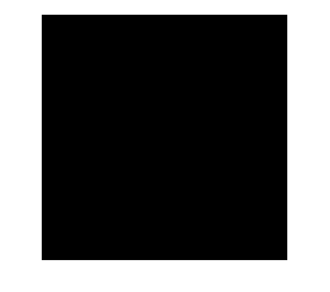
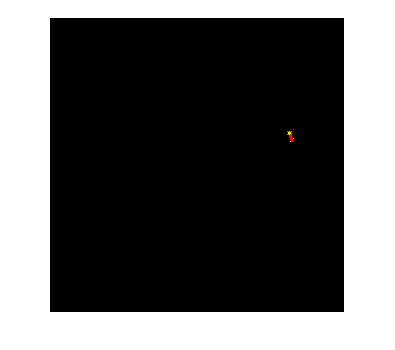

Tracking of rotating point using Kalman filter
Tracking of rotating point. Rotation speed is constant. Both state and measurements vectors are 1D (a point angle), Measurement is the real point angle + gaussian noise. The real and the estimated points are connected with yellow line segment, the real and the measured points are connected with red line segment. (if Kalman filter works correctly, the yellow segment should be shorter than the red one).
Pressing any key will reset the tracking with a different speed. Close the window to stop the program.
Sources:
set up display window
img = zeros(500, 500, 3, 'uint8'); hFig = figure('KeyPressFcn',@(o,e)setappdata(o, 'flag',true), ... 'Menubar','none', 'Name','Kalman Filter demo'); setappdata(hFig, 'flag',false); hImg = imshow(img);
helper anonymous functions
calcPoint = @(center,R,angle) center + [cos(angle), -sin(angle)]*R; drawCross = @(img,center,clr,d) cv.line(... cv.line(img, center-d, center+d, 'Color',clr, ... 'Thickness',1, 'LineType','AA'), ... center+[d -d], center+[-d d], 'Color',clr, ... 'Thickness',1, 'LineType','AA');
create and intialize Kalman filter
KF = cv.KalmanFilter(2, 1);
state = zeros(2,1); % [phi; delta_phi]
processNoise = zeros(2,1);
measurement = zeros(1,1);keep repeating until figure is closed
tic while ishghandle(hFig) if toc > 3, break; end setappdata(hFig, 'flag',false); % initialize KF state = randn(size(state))*0.1; KF.transitionMatrix = [1 1; 0 1]; KF.measurementMatrix = eye(size(KF.measurementMatrix)); KF.processNoiseCov = eye(size(KF.processNoiseCov))*1e-5; KF.measurementNoiseCov = eye(size(KF.measurementNoiseCov))*1e-1; KF.errorCovPost = eye(size(KF.errorCovPost)); KF.statePost = randn(size(KF.statePost))*0.1; % main loop while ishghandle(hFig) if toc > 3, break; end center = [size(img,2) size(img,1)]/2; R = size(img,2)/3; stateAngle = state(1); statePt = calcPoint(center, R, stateAngle); prediction = KF.predict(); predictAngle = prediction(1); predictPt = calcPoint(center, R, predictAngle); measurement = randn(size(measurement))*KF.measurementNoiseCov(1); % generate measurement measurement = measurement + KF.measurementMatrix*state; measAngle = measurement(1); measPt = calcPoint(center, R, measAngle); % plot points img(:) = 0; img = drawCross(img, statePt, [255 255 255], 3); img = drawCross(img, measPt, [255 0 0 0], 3); img = drawCross(img, predictPt, [0 255 0], 3); img = cv.line(img, statePt, measPt, 'Color',[255 0 0], ... 'Thickness',3, 'LineType','AA'); img = cv.line(img, predictPt, measPt, 'Color',[255 255 0], ... 'Thickness',3, 'LineType','AA'); if rand > 0.75 KF.correct(measurement); end processNoise = randn(size(processNoise))*sqrt(KF.processNoiseCov(1,1)); state = KF.transitionMatrix*state + processNoise; % update display set(hImg, 'CData',img); % break of inner loop on any key press flag = getappdata(hFig, 'flag'); if isempty(flag)||flag, break; end pause(0.1) end end